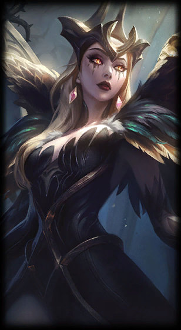
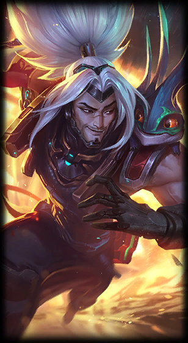

Biography
Luka "PERKZ" Perković is a League of Legends esports player, currently mid laner for G2 Esports. His name was previously stylized Perkz and PerkZ.
Season 4
PerkZ joined GSI Gaming mid-way through the season, and there played alongside P1noy and Hiiva, among others. With the team, he competed at DreamHack Summer 2014, though they did not make it past the group stage. PerkZ also won EpicGear Cup 16 and came 2nd in EpicGear Cup 17 with the team before they disbanded later on in the year.
Season 5
At the start of the season, PerkZ joined Gamers2. He participated at International Invitational Tournament 4 with the team and later the EUCS Spring Qualifier on the same roster as beansu, Obvious, Kobbe and kaSing, though they were beaten by Team Nevo in the final of their qualifier bracket. He then left the team, joining Millenium soon after. With Millenium, PerkZ and the roster finished 2nd at Gamers Assembly 2015 behind only Origen, though he stopped playing with the team before DreamHack Tours 2015 due to exams. Not long after, PerkZ officially left the team. At the start of the next month it was announced that PerkZ would be rejoining Gamers2, who had retained their Challenger Series spot for the EUCS Summer Season. In October, Gamers2 rebranded themselves to G2 Esports.
Season 6
G2 Esports quickly rose to prominence and recognition in the LCS, consistently tied for first place after each week, sometimes with H2k and sometimes also with Vitality, until the end of the split when they held first place with sole possession. With a quarterfinal bye, the playoffs also saw them strong, as they defeated both Fnatic and Origen 3-1 to win the season and secure an invitation to the Mid-Season Invitational. Going into MSI, G2 Esports were seen as a favorite not to win, but to come in second place to the Korean representatives SK Telecom T1. However, the team lost their first four games of the round robin and ultimately finished in fifth place, ahead of only SuperMassive eSports, and out of playoff contention - importantly, this placement meant that Europe would forfeit their Pool 1 seed at Worlds. In a statement published partway through the second day of play, G2 stated that their players had taken vacation time after a "rigorous Spring Split." AD carry Emperor later stated that there had been an internal conflict within the team one day prior to the start of the event.
Trivia
- His ID Perkz is based on his surname (Perković).
- Chinese fans usually compare Perkz with GodV.
- Because they are both cocky talented mid laners, and their first appearance at Worlds didn't go well.
- Hence then, Chinese fans usually nickname him as "阿p" meaning "GodP".
- Featured in "RISE" - Worlds 2018 promotional music video as a side character.
- Holds the record of all-time most EU/LEC titles at 7.
- Reached 1000 kills in the LEC on September 8, 2019.
- The 3rd player to reach 1000 kills in the LEC after Rekkles and nkos" Jankos.
- His 1000th kill was on Fnatic's Nemesis in the 19 Season/Summer Playoffs" LEC 2019 Summer Finals with Kai'Sa.
- Graduated from music school and plays the guitar.
| Perkz | ||
|---|---|---|
|
1 / 3

Perkz
2 / 3

LeBlanc
3 / 3

Yasuo
|
||
| Background Information | ||
| Name | Luka Perković | |
| Country of Birth | Croatia | |
| Birthday | September 30, 1998 (age 21) | |
| Residency |
EU
Europe |
|
| Competitive | ||
| Team |  G2 Esports
G2 Esports
|
|
| Role | Mid Laner | |
| Soloqueue IDs | th dog3, G2 P3rkz, God is great, GL IN MACDONALD, CRO WONDERBOY, G2김치너무좋아 (KR), G2 Febiven (BR), i love IGRookie (KR), otwoeur52 (KR) | |
| Social Media & Links | ||
|
||